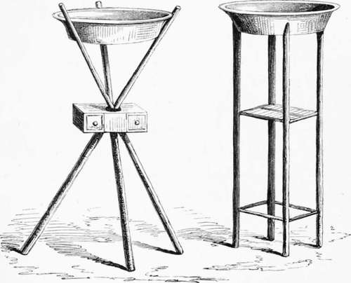

Chapter VI
Description
This section is from the book "Hog Hunting In The East, And Other Sports", by J. T. Newall. Also available from Amazon: Hog Hunting in the East, and Other Sports.
Chapter VI
The rival wash-hand stands—Esprit-de-Presidency—No khubber— Move to Dooree—En route—Native ideas on English customs— Tracking pig into the Runn—The run—A running fight—Its conclusion—The Dooree jungle and neighbourhood—Defining drunkenness—The bailie's opinion.
" I see your form of wash-hand stand and basin is different to ours," said Stewart to Melton, the Bengalee, as they lounged about outside on the following morning. " Is that the common gindee in use on your side ?" he asked, as he pointed to the article in question standing outside Melton's tent door.
The Rival Wash-Hand Stands.
" Yes," was the reply. "It is the article we commonly use, though we call them ' chilumchees.' Not a bad dodge, is it ? I wonder you ducks don't take to it, it is so much more convenient than yours, don't you think so ?
Now there is or rather was, for much wholesome spirit and emulation has been done away with by " amalgamation — great " esprit-de-Presidency " in India, leading to considerable rivalry, more especially marked in the case of Bengal and Bombay. And this extended not only to such matters as the organisation and economy of the respective armies, manner and system of horsing guns, and such like, but to concerns of far less importance.
Imbued with such sentiments, it was, of course, altogether impossible for Stewart to admit that anything of Bengal construction could be superior to a similar article, the produce of Bombay. He therefore replied in the negative, without the slightest hesitation.
" No, 111 be hanged if I think so," he said. " The stand doesn't fold up so well, and the gindee itself is" But, my good fellow, look here," interrupted Melton ; " observe, we have a place to put things on, and the whole affair closes flat in one piece, without necessitating the removal of a box, as in yours. Our chilumchee is of brass too, and--"
" If," said Stewart, in turn interrupting the flow of the other s eloquence, " if you will only attentively examine our method, I think you will admit its superiority. It is lighter and, moreover, in the drawers of the box can be stowed sponges and other things. The gindee, also, of copper tinned over, is--"
" My dear Stewart, I really must say you ducks are rather given to fancy that the produce of Duckland is in every way superior to that of Bengal. Now do just feel this chilumchee; see how easily it is cleaned-"
" Cleaned ! " exclaimed the other, " why it requires nilar polishing up daily, and our gindee is rinsed out and at once ready for use."
"I see there is no convincing you. I daresay now you consider your style of camp-table superior to ours ?"
" The camp-table," repeated Stewart, a little doubtfully ; and then, with a due regard of his Presidency's honour, added, " Why, of course I do. If you'll show me yours, I'll prove it.
As the speaker had never seen a camp-table of the Bengal pattern, and was quite ignorant of the difference existing between the rival articles, this may have been deemed a bold and venturous statement. " Now isn't that a far neater and lighter article than yours ?" asked the Bengalee, triumphantly, as he showed the table referred to. " I natter myself that it is handier in every way than your clumsy contrivance."
"Well, you Qui-hyes think everything you have must be the best, just because it happens to be Bengalee," rejoined Stewart. " I really cannot agree with you. Look at the legs of our ta,ble, how nicely they fold ; and then the table is so much firmer and heavier. When packed"
" Heavier! " answered the Qui-hye, " of course it is. Just now you considered lightness an advantage. Now ours doubles up at once, and it has the advantage of being in two pieces."
" Come, be consistent, Melton. You thought it an excellence in the wash-hand stand that it consisted of one piece, and now you praise the table for being in two."
Where the controversy would have ended it would be difficult to say; but a summons just then to breakfast brought it to an abrupt conclusion, though one somewhat unsatisfactory in respect of the superiority claimed for each. The cuts will, however, enable a discerning public to gauge the respective merits of the rival wash-hand stands.
Expecting, at the outside, but one day's more sjDort at Lodye, it had been decided to move the camp to Dooree, and ride on there after the day's hunting was over. It was only about six miles off, on the edge of the Eunn, but rather nearer Bhooj, and the country they proposed hunting over subsequently. In accordance with this programme, when the early breakfast was over, the tents were struck and, with the kit, packed and dispatched to their destination, the guns and spears being alone left behind.
There was a good deal of anxiety perceptible as an hour passed and Natta still remained absent. Several climbed the neighbouring spurs of hill, and looked forth over the jungle and into the waste in hopes of deriving inspiration as to the cause of delay. Some wandered listlessly among the horses, smoking, and examined their spears and accoutrements; all, however, occasionally turning an earnest gaze on the road by which it was expected Natta would approach. One or two of the less sanguine pronounced it " as all up with hunting for that day," and proceeded to get their shooting gear in order. A few there were who firmly clung to hope, and contended that the tardy arrival of the old Shikaree was a good sign, as indicating the fact of his being on the trail of pig. But such a theory was advanced more in the hope than the expectation of its realisation, and these were doomed to disappointment, when, after the lapse of another hour, Natta appeared with his assistants, and reported that he could find no fresh traces of pig? either out in the Eunn or in the jungle nearer at hand.
" They have all taken to the high hills, sahib," he said. " Perhaps if we beat we may find some in the Bunnee. It is as the sahibs order."
Continue to: